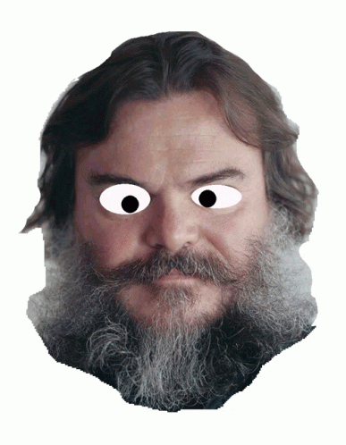

Contaminations from and to other styles
Youtube Poops are connected with a lot of TV and internet video subgenres. Now we will take a look of some of them.
- Anime music video (AVM): is a fan-made music video consisting of clips from one or more Japanese animated shows or movies set to an audio track, often songs or promotional trailer audio. The term is generally specific to Japanese anime, however, it can occasionally include footage from other mediums, such as American animation, live action, or video games. AMVs are not official music videos released by the musicians, they are fan compositions which synchronize edited video clips with an audio track. AMVs are most commonly posted and distributed over the Internet through AnimeMusicVideos.org, video downloads and YouTube. Anime conventions frequently run AMV contests who usually show the finalists/winner's AMVs.1
- Animutation (also reffered as fanimutation): is a form of web-based computer animation, typically created in Adobe Flash and characterized by unpredictable montages of pop-culture images set to music, often in a language foreign to the intended viewers. It is not to be confused with manual collage animation (e.g., the work of Stan Vanderbeek and Terry Gilliam), which predates the Internet.2
- Cult Toons (also referred to by Exceeda as 'AKA Cult Toons'): was a series of 30-minute slot experimental alternate comedy VJ (video jockey) videos, directed by Xavier Perkins and Brett Foraker. The inclusion of seemingly irrelevant and obscure clips from films and cartoons gave the show a very surreal and non sequitur quality. For example, common features of the re-edited cartoons would include repeated footage (when a character would say "You can say that again" the previous line would often be repeated), freezing the footage (usually after a line such as "Hold everything!" or "Stop!"), overdubbing voices (including randomly replacing lines with the theme music to The Godzilla Power Hour), and repeating a line or sound effect and adding drum beats and record scratches over it, turning it into a brief hip-hop song.3
- Remix culture (sometimes read-write culture): is a term describing a society that allows and encourages derivative works by combining or editing existing materials to produce a new creative work or product. A remix culture would be, by default, permissive of efforts to improve upon, change, integrate, or otherwise remix the work of copyright holders without their permission. While combining elements has always been a common practice of artists of all domains throughout human history, the growth of exclusive copyright restrictions in the last several decades limits this practice more and more by the legal chilling effect.4
- Vidding: is a fan labor practice in media fandom of creating music videos from the footage of one or more visual media sources, thereby exploring the source itself in a new way. The creator may choose video clips in order to focus on a single character, support a particular romantic pairing between characters, criticize or celebrate the original text, or point out an aspect of the TV show or film that they find under-appreciated. The resulting video may then be shared via one or more social media outlets and online video platforms such as YouTube. The creators refer to themselves as "vidders", their product as "vids", "fanvids", "songvids" or the more recently adopted name "edits" and the act itself as vidding.5

Source 2 ↗
Source 3 ↗
Source 4 ↗
Source 5 ↗